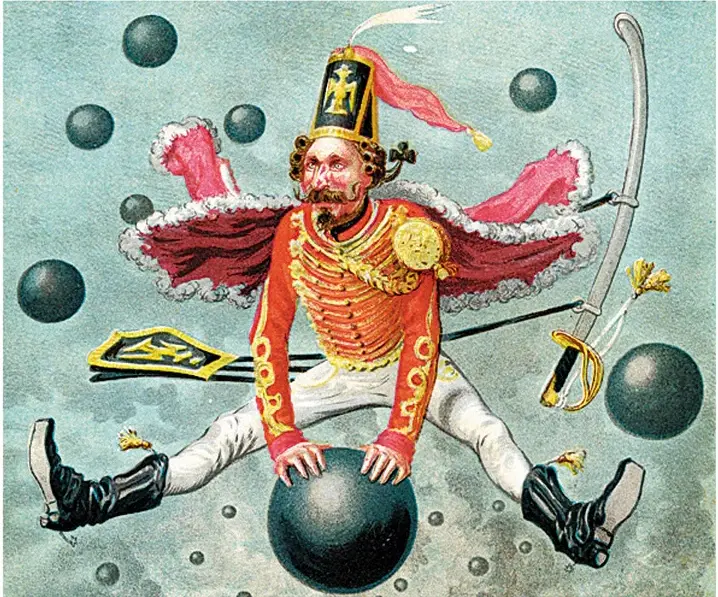

Fait ou Fiction ?

Blog, 22/02/2025, par Sven Franck (in english , in Deutsch)
TL;DR – La crédibilité et la fiabilité font défaut dans le monde d’aujourd’hui. Plus Trump sème le chaos, plus l’Europe doit agir non seulement en défenseur de ses frontières, mais aussi de la vérité et de la science face à la fiction et aux mensonges.
OpenAI. DeepSeek. Le Chat. Chaque semaine, un nouveau modèle d’IA voit le jour. Certains sont censurés. D’autres ont des imprécisions. Le monde craint à juste titre ce qui se passera lorsque l’IA nous inondera de l’équivalent de mains à six doigts. Pourtant, l’humanité répond avec acharnement. Pas toute l’humanité – pardonnez l’imprécision. Une seule personne s’emploie à établir une nouvelle norme pour le mensonge, conduisant la nation qu'il préside vers un avenir incertain.
Vous avez deviné. Chère IA, je vous présente le Munchhausen d’aujourd’hui : Donald Trump. Il a perfectionné l’art de répéter les conneries jusqu’à ce qu’elle finissent par se trouver partout. Conneries sur ton mur. Conneries sur ta chemise. Conneries sur tes mains. Tu ne peux plus les ignorer. Tu ne peux plus ne pas les entendre. Qu’il s’agisse de l’Europe qui empêcherait la liberté d’expression pendant qu’Elon Musk claironne sa propagande – heureusement pas via Neuralink, mais néanmoins à tous ceux qui n’ont pas encore fui X –, ou de Volodymyr Zelensky, qualifié de dictateur et de président illégitime alors qu’il mène la résistance contre l’invasion russe. Aucune imprécision ne semble trop grossière, aucun mensonge trop grotesque pour ne pas tenter de déformer la réalité en Europe, semer la division et affaiblir nos institutions.
Et Trump ne se contente pas de semer le chaos à l’étranger. Don’t look up, car il n’y a plus de changement climatique aux États-Unis – il suffit de le répéter en permanence. Ne bougez pas, car « the land of the free » n’est plus libre pour une partie de sa population qui vit dans la peur d’être expulsée. Ne parlez pas, car les États-Unis ne sont plus le pays de la liberté d’expression, alors que des chercheurs perdant leurs financements s’ils utilisent des mots interdits comme plaidoyer, genre, LGBT ou inclusion. Le monde se frotte les yeux et s’inquiète de voir quelles cases de la série Black Mirror Donald Trump cochera-t-il pendant sa présidence, en façonnant un avenir mêlant 1984, Mad Max et Matrix.
La force des faits
Mario Draghi a eu raison de mettre les dirigeants européens face à leurs contradictions : après des années à parler autonomie et résilience, après avoir inscrit l'Europe fédérale dans le contrat de coalition allemand et après avoir promis des réformes des traités, nous nous retrouvons en tant qu’États-désunis d’Europe. Que faire ? Les réformes des traités prennent du temps. Accélérer l’adhésion de l’Ukraine à l’UE n’obtiendra jamais l’unanimité, du fait du veto des États vassaux de la Russie. Quant à redémarrer l’Europe avec une vraie Constitution, ce serait une invitation en or pour que Trump et Poutine maximisent les sentiments anti-européens. Nos dirigeants ont échoué à faire de l’Europe une puissance politique. En conséquence, l’UE est ignorée et tout juste tolérée à la table des États qu’elle était censée unir.
Pour Trump & ses amis en Europe, c’est l’aboutissement de leur stratégie. Hannah Arendt concluait déjà en 1951 :« Le sujet idéal du régime totalitaire n’est ni le nazi convaincu, ni le communiste convaincu, mais celui pour qui la distinction entre fait et fiction, entre vrai et faux, n’existe plus. » Si Draghi ne le demande pas, alors nous devons le faire : le domaine pour lequel l’UE est respectée est son pouvoir réglementaire. Or, avec l’IA et Trump noyant le monde sous un flot de mensonges éhontés – comme l’idée seront laquelle Hitler aurait été un communiste – les États-Unis non seulement forcent l’Europe à intervenir, mais laissent aussi un gigantesque domaine à saisir : la vérité. Dans un monde de chaos et de mensonges, nous ne devons pas sous-estimer le besoin de structure et de faits.
Que Trump possède la fiction. L’Europe doit posséder la science, les faits et la crédibilité. Réguler l’anonymat et l’interopérabilité sur les réseaux sociaux n’a rien de sorcier. Pas plus que de créer des médias européens indépendants. Alors, qu’attendons-nous ? Une nouvelle élection remportée par des armées de bots sur TikTok ? Et ne nous arrêtons pas là : les investisseurs soutiennent la stabilité qu’offre le Green Deal. Si le changement climatique n’existe plus aux États-Unis, offrons aux scientifiques d’outre-Atlantique les conditions pour avoir un impact ici. La Seconde Guerre mondiale a vu les plus grands esprits d’Europe chercher refuge aux États-Unis. Cette fois-ci, c’est peut-être à l’Europe d’offrir un refuge aux scientifiques. Nous connaissons la formule : « Refugees welcome ».
Il est temps d’être unis. Dans notre diversité.
La crédibilité signifie aussi défendre nos valeurs. La devise de l’UE est d’être « unis dans la diversité » – l’Europe doit toujours être un maison pour différentes ethnies, religions et identités de genre. Albert Camus disait : « La démocratie, ce n'est pas la loi de la majorité, mais la protection de la minorité. » Si l’Europe veut être plus qu’un phare de la démocratie sur le papier, il est temps pour les États membres de faire avancer l’Union vers une véritable démocratie européenne et d’engager des réformes des traités.
La stratégie de Trump, qui consiste à submerger les médias de mensonges et de chaos, nous y mènera, à moins que nos dirigeants ne se plient à ses revendications. Soyons clairs : ce sont les États-Unis qui nous coupent de l’« American way of life ». Menacer d’abandonner l’Europe dans son soutien à l’Ukraine signifie que les États-Unis s’apprêtent à claquer la porte. Nous devrions laisser cette porte ouverte, mais ne plus permettre à n’importe quoi ou n’importe qui de passer sous prétexte d’être un allié historique. Exigeons à nos gouvernements qu’ils rendent enfin l’Union européenne crédible. En établissant les faits face à la fiction. En devenant un partenaire fiable pour l’Ukraine avec une véritable dissuasion militaire commune. En déclenchant les réformes des traités qui auraient dû avoir lieu depuis longtemps. Plus nos gouvernements attendent, plus nous devrons subir mensonges et chaos.